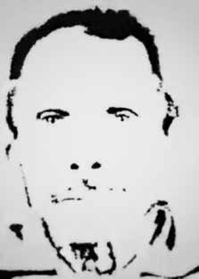

Raimundo
Nonato
Paz
CIRCUNSTÂNCIAS DA MORTE
Raimundo Nonato Paz foi morto no dia 2 de janeiro de 1971, por agentes do DOPS/CE, no episódio conhecido como “Chacina de Japuara”. Nessa data, um grupo de aproximadamente 23 policiais, sob o comando de Cid Martus, cercou a residência da vítima e, de acordo com matéria do jornal O Povo, de 4 de janeiro de 1971, “armados de metralhadoras, fuzis mosquetões e revolveres empreendem no momento a mais rigorosa diligência no município de Canindé”.
A violência sofrida pelos moradores da fazenda Japuara, no município de Canindé, no Ceará, é emblemática do período em que se exacerbou no meio rural a repressão do regime militar, com a articulação entre as ações de violência comandadas pelo latifúndio e as promovidas pelos agentes do Estado, por meio das forças policiais. Os abusos praticados pelo novo proprietário da fazenda, Júlio Cesar Campos, sobre os moradores começaram no final dos anos 1960 e se intensificaram no começo dos anos 1970.
Os principais confrontos, conhecidos como a “Chacina de Japuara”, ocorreram em dois momentos no dia 2 de janeiro de 1971, conforme testemunho do camponês Francisco Blaudes de Sousa Barros, em seu livro Japuara, um relato das entranhas do conflito. Os conflitos ocorreram em 1968 quando a herdeira da fazenda, Hebe Braga Barroso, vendeu a propriedade para Júlio Cesar Campos.
O primeiro dono da área, Anastácio Braga Barroso, ainda em vida, havia arrendado a terra a seu sócio, Firmino da Silva Amorim, que, por sua vez, deixou-a sob a administração de Pio Nogueira, pai de Francisco Blaudes, que se tornou o líder da resistência dos moradores. Ao colocar a propriedade à venda, a herdeira, Hebe Braga Barroso, assumiu o compromisso de dar prioridade ao antigo ocupante, mas descumpriu o acordo verbal, vendendo a área a outro interessado. O ocupante deu entrada na Justiça em uma ação preferencial de compra e em outra exigindo indenização pelas benfeitorias.
O novo proprietário solicitou emissão de posse e ganhou a questão. Em 1969, foi expedido o mandado contra o ocupante e contra os moradores-parceiros. A ação atingiu 59 trabalhadores rurais e suas famílias. O mandado judicial concedia 24 horas para que deixassem a área. Um advogado designado pela Federação dos Trabalhadores na Agricultura do Estado do Ceará (Fetraece) dedicou-se à causa dos moradores, obtendo uma decisão favorável que sustou a ação de despejo.
Em 2/1/1971 ocorreram então os dois confrontos mais graves. No primeiro episódio, houve uma tentativa de despejar os moradores à força. O proprietário da fazenda contratou homens que trabalhavam nas frentes de emergência contra a seca para destelhar as casas e destruir as benfeitorias. No mesmo dia, o delegado do DOPS/CE, Cid Martus, acompanhado de policiais militares, invadiu a fazenda. Houve resistência dos moradores, que se defendiam com foices, facões e outros instrumentos de trabalho. Sem conseguir demover os agressores, o administrador da fazenda e líder do grupo, Pio Nogueira, foi para dentro de sua casa, que estava sendo destelhada, para impedir sua destruição.
Para tentar evitar o pior, disparou sua arma calibre 20 para o alto, ferindo um peão, que caiu sobre uma cerca de varas e morreu. Joaquim Rodrigues, o Piau, era um alistado nas frentes de emergência. Os peões começaram a se reunir em frente à casa. Temendo uma investida, Pio fez vários outros disparos para o alto. O grupo se dispersou e deixou a fazenda. No segundo episódio, em um confronto entre o mesmo delegado do DOPS/CE, policiais militares e agricultores, três pessoas perderam a vida: o próprio delegado, o agricultor Raimundo Nonato Paz e o policial militar Jorge Paulo de Freitas.
O conflito começou quando da chegada do delegado, acompanhado de um grupo de policiais militares armados. De forma violenta, o delegado interpelou Raimundo, um camponês de 60 anos de idade na ocasião, sobre onde se encontrava o líder do grupo, Pio Nogueira. Depois disso, humilhou o trabalhador. No livro Japuara, um relato das entranhas do conflito (2013), Francisco Blaudes de Sousa Barros descreveu o momento em que Raimundo foi interpelado pelo delegado, que tentou arrebatar-lhe bruscamente a foice das mãos.
Com dificuldades para responder por ter ficado muito nervoso e ser gago, Raimundo seguiu segurando firmemente seu instrumento de trabalho. De acordo com a narrativa, Incomodado com a resistência de alguém supostamente frágil, mas com tamanha firmeza, enquanto falava, num ímpeto, o delegado engatilhou seu revólver calibre 38 na face do velho e disparou à queima-roupa. O projétil se alojou na maçã do rosto do trabalhador, abaixo da cavidade do olho.
Depois de alvejado e desorientado pelo ferimento, Raimundo atingiu o delegado com a foice. Os policiais dispararam no trabalhador e no final do confronto, o camponês e o delegado morreram. De acordo com o livro-relatório Direito à Memória e à Verdade, da Comissão Especial sobre Mortos e Desaparecidos Políticos (2007), um exame necroscópico foi realizado no corpo do trabalhador, na Delegacia de Polícia de Canindé, em 26/2/1972, assinado pelos médicos Waldez Diógenes Sampaio e Antônio Lins Mello, que confirmaram a morte do agricultor em tiroteio, atestando “parada cardíaca” como causa da morte.
A necropsia foi feita por solicitação do capitão da PM Antônio Carlos Alves Paiva, encarregado do Inquérito Policial Militar (IPM). Depois do confronto, os líderes camponeses que resistiram à ação policial se esconderam na mata. As mulheres e filhos enfrentaram espancamentos, humilhações e perseguições. Um dos casos registrados foram os maus-tratos sofridos pelo menino Francisco de Souza Barros, de nove anos, registrados no livro Brasil Nunca Mais: interrogado pela polícia sobre onde estava seu pai, ele foi sequestrado e obrigado a carregar armas pesadas mata adentro, ficando com graves sequelas emocionais.
O grupo de moradores formado por Francisco Nogueira Barros, o Pio; seu filho, Francisco Blaudes de Sousa Barros; Joaquim Abreu, Alfredo Ramos Fernandes, o Alfredo 21; Antonio Soares Mariano, o Antonio Mundoca; e Luís Mariano da Silva, o Luís Mundoca, ficou vários dias na mata. Ao ser resgatado, o grupo ficou preso por cerca de um mês em uma unidade do Corpo de Bombeiros, quando se iniciou o IPM.
Depois, o caso foi remetido à Justiça comum. Dez trabalhadores foram indiciados como implicados nas mortes de um carreteiro, do soldado e do delegado. Ninguém foi indiciado pela morte do camponês Raimundo Nonato Paz. Dias depois, a Federação dos Trabalhadores na Agricultura do Estado do Ceará (Fetraece) encaminhou pedido de desapropriação da fazenda ao recém-criado Instituto Nacional de Colonização e Reforma Agrária (Incra).
A solicitação estava fundamentada na eclosão do próprio conflito, na irregularidade da venda da área e no fato de que 80% das benfeitorias existentes pertenciam aos moradores-parceiros. Temendo que o episódio estimulasse novas ações de resistência na região, o presidente da República, Emílio Garrastazu Médici, assinou decreto desapropriando 3.645 hectares em benefício de 39 famílias. A resistência da fazenda Japuara converteu-se, assim, no primeiro caso de desapropriação para fins de Reforma Agrária, em pleno regime militar.
O registro feito pela Gazeta de Notícias, na data da desapropriação da fazenda, em 25 de março de 1971, destacou que […] o decreto baseou-se na exposição de motivos do Ministério da Agricultura que lembrou os lamentáveis feitos ali ocorridos recentemente, quando ocupantes da área, há vários anos, com arrendamento e parceria, foram vítimas da violência por parte do proprietário Júlio Cesar Campos.
Diz ainda o ministro que a área se caracteriza como de forte tensão social. Estudiosos apontaram tratar-se de uma “medida acauteladora” do governo Médici, traduzindo o temor, por parte do regime militar, de que o caso da fazenda Japuara se estendesse a outras propriedades em situação de conflito. A princípio os jornais tratavam os camponeses como “bárbaros”, que “ceifaram a vida de policiais trabalhadores”.
Depois reconheceram que eles “apenas agiram em legítima defesa para defenderem seus lares dos algozes contratados pelo fazendeiro”. E, ao final, entenderam que “tão justa foi sua causa que o Governo Federal os beneficiou com a primeira Reforma Agrária do Estado do Ceará”.
Em 1978, o próprio assessor jurídico da Fetraece, Lindolfo Cordeiro, que prestou assistência aos trabalhadores rurais no episódio, foi preso pelo governo militar e assassinado ao sair da prisão, a mando de latifundiários. Passados quase 15 anos do conflito, em 1984, todos os camponeses indiciados no processo foram absolvidos com base na tese de legítima defesa e negativa de autoria dos crimes. Os restos mortais de Raimundo Nonato Paz foram enterrados no cemitério de Canindé, no Ceará.
Raimundo Nonato Paz was killed on January 2, 1971, by DOPS/CE agents, in the episode known as the “Japuara Massacre”. On that date, a group of approximately 23 police officers, under the command of Cid Martus, surrounded the victim's residence and, according to an article in the newspaper O Povo, dated January 4, 1971, “armed with machine guns, carabiner rifles and revolvers, they are currently undertaking the most rigorous investigation in the municipality of Canindé”.
The violence suffered by the residents of the Japuara farm, in the municipality of Canindé, in Ceará, is emblematic of the period in which the repression of the military regime was exacerbated in rural areas, with the articulation between the violent actions commanded by the large landowners and those promoted by State agents, through the police forces. The abuses practiced by the farm's new owner, Júlio Cesar Campos, on the residents began in the late 1960s and intensified in the early 1970s.
The main clashes, known as the “Japuara Massacre”, occurred in two moments on January 2, 1971, according to the testimony of peasant Francisco Blaudes de Sousa Barros, in his book Japuara, an account of the depths of the conflict. Conflicts occurred in 1968 when the farm's heiress, Hebe Braga Barroso, sold the property to Júlio Cesar Campos.
The first owner of the area, Anastácio Braga Barroso, while still alive, had leased the land to his partner, Firmino da Silva Amorim, who, in turn, left it under the administration of Pio Nogueira, father of Francisco Blaudes, who became the leader of the residents' resistance. When putting the property up for sale, the heiress, Hebe Braga Barroso, made a commitment to give priority to the former occupant, but broke the verbal agreement, selling the area to another interested party. The occupant filed a preferential purchase action in court and another demanding compensation for the improvements.
The new owner requested issuance of possession and won the matter. In 1969, the warrant was issued against the occupant and the resident partners. The action affected 59 rural workers and their families. The court order gave them 24 hours to leave the area. A lawyer appointed by the Federation of Agricultural Workers of the State of Ceará (Fetraece) dedicated himself to the residents' cause, obtaining a favorable decision that halted the eviction action.
On January 2, 1971, the two most serious clashes occurred. In the first episode, there was an attempt to forcibly evict the residents. The farm owner hired men who worked on the drought emergency fronts to roof the houses and destroy the improvements. On the same day, the DOPS/CE delegate, Cid Martus, accompanied by military police, invaded the farm. There was resistance from residents, who defended themselves with sickles, machetes and other work tools. Unable to deter the attackers, the farm administrator and leader of the group, Pio Nogueira, went inside his house, which was being roofed, to prevent its destruction.
To try to avoid the worst, he fired his 20-gauge gun into the air, injuring a pedestrian, who fell over a fence and died. Joaquim Rodrigues, known as Piau, was enlisted on the emergency fronts. Pedestrians began to gather in front of the house. Fearing an attack, Pius fired several more shots into the air. The group dispersed and left the farm. In the second episode, in a confrontation between the same DOPS/CE delegate, military police officers and farmers, three people lost their lives: the delegate himself, farmer Raimundo Nonato Paz and military police officer Jorge Paulo de Freitas.
The conflict began when the delegate arrived, accompanied by a group of armed military police. In a violent manner, the delegate questioned Raimundo, a 60-year-old peasant at the time, about where the group's leader, Pio Nogueira, was. After that, he humiliated the worker. In the book Japuara, an account of the depths of the conflict (2013), Francisco Blaudes de Sousa Barros described the moment when Raimundo was questioned by the delegate, who tried to abruptly snatch the scythe from his hands.
Having difficulty responding because he was very nervous and stuttered, Raimundo continued to hold his work instrument tightly. According to the narrative, Uncomfortable with the resistance of someone supposedly fragile, but with such firmness, while speaking, in a rush, the deputy cocked his 38-caliber revolver in the old man's face and fired at point-blank range. The projectile lodged in the worker's cheekbone, below the eye socket.
After being shot and disoriented by the wound, Raimundo hit the deputy with the scythe. The police shot the worker and at the end of the confrontation, the peasant and the police chief died. According to the report book Right to Memory and Truth, by the Special Commission on Political Dead and Missing (2007), a necroscopic examination was carried out on the worker's body, at the Canindé Police Station, on 2/26/1972, signed by doctors Waldez Diógenes Sampaio and Antônio Lins Mello, who confirmed the farmer's death in a shootout, confirming “cardiac arrest”. as the cause of death.
The autopsy was carried out at the request of PM captain Antônio Carlos Alves Paiva, in charge of the Military Police Inquiry (IPM). After the confrontation, the peasant leaders who resisted police action hid in the woods. Women and children faced beatings, humiliation and persecution. One of the recorded cases was the mistreatment suffered by nine-year-old Francisco de Souza Barros, recorded in the book Brasil Nunca Mais: questioned by the police about where his father was, he was kidnapped and forced to carry heavy weapons into the forest, leaving him with serious emotional consequences.
The group of residents formed by Francisco Nogueira Barros, Pio; his son, Francisco Blaudes de Sousa Barros; Joaquim Abreu, Alfredo Ramos Fernandes, Alfredo 21; Antonio Soares Mariano, Antonio Mundoca; and Luís Mariano da Silva, known as Luís Mundoca, spent several days in the forest. Upon being rescued, the group was trapped for around a month in a Fire Department unit, when the IPM began.
Afterwards, the case was referred to the common court. Ten workers were indicted as being involved in the deaths of a truck driver, the soldier and the police chief. No one was charged with the death of peasant Raimundo Nonato Paz. Days later, the Federation of Agricultural Workers of the State of Ceará (Fetraece) sent a request to expropriate the farm to the recently created National Institute of Colonization and Agrarian Reform (Incra).
The request was based on the outbreak of the conflict itself, the irregularity of the sale of the area and the fact that 80% of the existing improvements belonged to resident-partners. Fearing that the episode would stimulate new resistance actions in the region, the President of the Republic, Emílio Garrastazu Médici, signed a decree expropriating 3,645 hectares for the benefit of 39 families. The resistance of the Japuara farm thus became the first case of expropriation for the purposes of Agrarian Reform, during the military regime.
The record made by Gazeta de Notícias, on the date of the expropriation of the farm, on March 25, 1971, highlighted that […] the decree was based on the explanatory memorandum of the Ministry of Agriculture which recalled the regrettable events that occurred there recently, when occupants of the area, several years ago, with lease and partnership, were victims of violence on the part of the owner Júlio Cesar Campos.
The minister also says that the area is characterized by strong social tension. Scholars pointed out that this was a “precautionary measure” by the Médici government, reflecting the fear, on the part of the military regime, that the case of the Japuara farm would extend to other properties in a situation of conflict. At first the newspapers treated the peasants as “barbarians” who “took the lives of hard-working police officers”.
They later recognized that they “only acted in self-defense to defend their homes from the executioners hired by the farmer”. And, in the end, they understood that “their cause was so just that the Federal Government benefited them with the first Agrarian Reform in the State of Ceará”.
In 1978, Fetraece's own legal advisor, Lindolfo Cordeiro, who provided assistance to rural workers in the episode, was arrested by the military government and murdered upon leaving prison, at the behest of landowners. Almost 15 years after the conflict, in 1984, all the peasants indicted in the process were acquitted based on the thesis of self-defense and denial of responsibility for the crimes. The mortal remains of Raimundo Nonato Paz were buried in the Canindé cemetery, in Ceará.
Raimundo Nonato Paz fue asesinado el 2 de enero de 1971 por agentes del DOPS/CE, en el episodio conocido como la “Masacre de Japuara”. En esa fecha, un grupo de aproximadamente 23 policías, al mando de Cid Martus, rodearon la residencia de la víctima y, según un artículo del diario O Povo, del 4 de enero de 1971, “armados con ametralladoras, carabinas y revólveres, actualmente realizan la más rigurosa investigación en el municipio de Canindé”.
La violencia sufrida por los habitantes de la hacienda Japuara, en el municipio de Canindé, en Ceará, es emblemática del período en que la represión del régimen militar se exacerbó en las zonas rurales, con la articulación entre las acciones violentas comandadas por los grandes terratenientes y las promovidas por agentes del Estado, a través de las fuerzas policiales. Los abusos practicados por el nuevo propietario de la finca, Júlio Cesar Campos, contra los residentes comenzaron a finales de los años 1960 y se intensificaron a principios de los años 1970.
Los principales enfrentamientos, conocidos como “Masacre de Japuara”, ocurrieron en dos momentos el 2 de enero de 1971, según el testimonio del campesino Francisco Blaudes de Sousa Barros, en su libro Japuara, un relato de la profundidad del conflicto. Los conflictos surgieron en 1968 cuando la heredera de la finca, Hebe Braga Barroso, vendió la propiedad a Júlio Cesar Campos.
El primer propietario de la zona, Anastácio Braga Barroso, en vida, había arrendado el terreno a su socio, Firmino da Silva Amorim, quien, a su vez, lo dejó bajo la administración de Pio Nogueira, padre de Francisco Blaudes, quien se convirtió en el líder de la resistencia vecinal. Al poner a la venta el inmueble, la heredera, Hebe Braga Barroso, se comprometió a dar prioridad al antiguo ocupante, pero rompió el acuerdo verbal, vendiendo la zona a otro interesado. El ocupante interpuso ante los tribunales una acción de compra preferente y otra exigiendo una indemnización por las mejoras.
El nuevo propietario solicitó la expedición de la posesión y ganó el asunto. En 1969 se emitió la orden contra el ocupante y los socios residentes. La acción afectó a 59 trabajadores rurales y sus familias. La orden judicial les dio 24 horas para abandonar la zona. Un abogado designado por la Federación de Trabajadores Agrícolas del Estado de Ceará (Fetraece) se dedicó a la causa de los vecinos, obteniendo una decisión favorable que frenó la acción de desalojo.
El 2 de enero de 1971 se produjeron los dos enfrentamientos más graves. En el primer episodio, hubo un intento de desalojar por la fuerza a los residentes. El dueño de la finca contrató a hombres que trabajaron en los frentes de emergencia por sequía para techar las casas y destruir las mejoras. El mismo día, el delegado del DOPS/CE, Cid Martus, acompañado de policías militares, invadió la finca. Hubo resistencia de los vecinos, quienes se defendieron con hoces, machetes y otras herramientas de trabajo. Incapaz de disuadir a los atacantes, el administrador de la finca y líder del grupo, Pío Nogueira, entró en su casa, que estaba siendo techada, para evitar su destrucción.
Para tratar de evitar lo peor, disparó su arma calibre 20 al aire, hiriendo a un peatón, que cayó por una valla y murió. Joaquim Rodrigues, conocido como Piau, fue alistado en los frentes de emergencia. Los peatones comenzaron a congregarse frente a la casa. Temiendo un ataque, Pío disparó varios tiros más al aire. El grupo se dispersó y abandonó la finca. En el segundo episodio, en un enfrentamiento entre el mismo delegado del DOPS/CE, policías militares y agricultores, tres personas perdieron la vida: el propio delegado, el agricultor Raimundo Nonato Paz y el policía militar Jorge Paulo de Freitas.
El conflicto comenzó cuando llegó el delegado, acompañado de un grupo de policías militares armados. De manera violenta, el delegado interrogó a Raimundo, entonces campesino de 60 años, sobre dónde se encontraba el líder del grupo, Pío Nogueira. Después de eso, humilló al trabajador. En el libro Japuara, un relato del fondo del conflicto (2013), Francisco Blaudes de Sousa Barros describió el momento en que Raimundo fue interrogado por el delegado, quien intentó arrebatarle bruscamente la guadaña de las manos.
Al tener dificultades para responder porque estaba muy nervioso y tartamudeaba, Raimundo continuó sosteniendo con fuerza su instrumento de trabajo. Según la narración, incómodo con la resistencia de alguien supuestamente frágil, pero con tanta firmeza, mientras hablaba, a toda prisa, el diputado apuntó su revólver calibre 38 al rostro del anciano y disparó a quemarropa. El proyectil se alojó en el pómulo del trabajador, debajo de la cuenca del ojo.
Tras recibir un disparo y desorientarse por la herida, Raimundo golpeó al diputado con la guadaña. La policía disparó contra el trabajador y al final del enfrentamiento murieron el campesino y el jefe policial. Según el informe libro Derecho a la Memoria y a la Verdad, de la Comisión Especial sobre Muertos y Desaparecidos Políticos (2007), se realizó un examen necroscópico al cuerpo del trabajador, en la Comisaría de Canindé, el 26/02/1972, firmado por los médicos Waldez Diógenes Sampaio y Antônio Lins Mello, quienes confirmaron la muerte del campesino en un tiroteo, confirmando “paro cardíaco”. como causa de muerte.
La autopsia fue realizada a petición del capitán de la PM, Antônio Carlos Alves Paiva, a cargo de la Investigación de la Policía Militar (IPM). Luego del enfrentamiento, los líderes campesinos que resistieron la acción policial se escondieron en el bosque. Las mujeres y los niños sufrieron palizas, humillaciones y persecución. Uno de los casos registrados fue el maltrato sufrido por Francisco de Souza Barros, de nueve años, registrado en el libro Brasil Nunca Mais: interrogado por la policía sobre dónde estaba su padre, fue secuestrado y obligado a portar armas pesadas al bosque, dejándolo con graves consecuencias emocionales.
El grupo de vecinos formado por Francisco Nogueira Barros, Pío; su hijo, Francisco Blaudes de Sousa Barros; Joaquim Abreu, Alfredo Ramos Fernández, Alfredo 21; Antonio Soares Mariano, Antonio Mundoca; y Luís Mariano da Silva, conocido como Luís Mundoca, pasó varios días en el bosque. Al ser rescatados, el grupo quedó atrapado alrededor de un mes en una unidad del Departamento de Bomberos, cuando comenzó el MIP.
Posteriormente, el caso fue remitido al tribunal común. Diez trabajadores fueron acusados de estar implicados en la muerte de un camionero, del soldado y del jefe de policía. Nadie fue acusado por la muerte del campesino Raimundo Nonato Paz. Días después, la Federación de Trabajadores Agrícolas del Estado de Ceará (Fetraece) envió una solicitud de expropiación de la finca al recién creado Instituto Nacional de Colonización y Reforma Agraria (Incra).
La solicitud se basó en el propio estallido del conflicto, la irregularidad de la venta de la zona y el hecho de que el 80% de las mejoras existentes pertenecían a socios residentes. Temiendo que el episodio estimulara nuevas acciones de resistencia en la región, el presidente de la República, Emílio Garrastazu Médici, firmó un decreto por el que expropia 3.645 hectáreas en beneficio de 39 familias. La resistencia de la hacienda Japuara se convirtió así en el primer caso de expropiación con fines de Reforma Agraria, durante el régimen militar.
El registro realizado por la Gazeta de Notícias, en la fecha de la expropiación de la finca, el 25 de marzo de 1971, destacó que […] el decreto se basó en la exposición de motivos del Ministerio de Agricultura que recordaba los lamentables hechos ocurridos allí recientemente, cuando los ocupantes del área, hace varios años, con arrendamiento y sociedad, fueron víctimas de violencia por parte del propietario Júlio Cesar Campos.
El ministro también afirma que la zona se caracteriza por una fuerte tensión social. Los estudiosos señalaron que se trataba de una “medida de precaución” del gobierno de Médici, que reflejaba el temor, por parte del régimen militar, de que el caso de la finca Japuara se extendiera a otras propiedades en situación de conflicto. Al principio, los periódicos trataron a los campesinos como "bárbaros" que "quitaron la vida a los policías trabajadores".
Posteriormente reconocieron que “sólo actuaron en defensa propia para defender sus casas de los verdugos contratados por el campesino”. Y, al final, comprendieron que “su causa era tan justa que el Gobierno Federal los benefició con la primera Reforma Agraria en el Estado de Ceará”.
En 1978, el propio asesor legal de Fetraece, Lindolfo Cordeiro, quien brindó asistencia a los trabajadores rurales en el episodio, fue arrestado por el gobierno militar y asesinado al salir de prisión, a instancias de los terratenientes. Casi 15 años después del conflicto, en 1984, todos los campesinos imputados en el proceso fueron absueltos con base en la tesis de la legítima defensa y la negación de responsabilidad por los crímenes. Los restos mortales de Raimundo Nonato Paz fueron enterrados en el cementerio de Canindé, en Ceará.